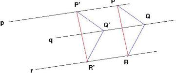
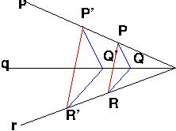

Geometry of division rings
It is fairly easy to construct a geometry from algebra: given a division ring K we form an n-dimensional vector space, the points being the elements of the field and a line being a translation of all (left) multiples of a non-zero vector, i.e. of the form \(\{a\mathbf{v} + \mathbf{c}| a \in K\}\) for some fixed vectors \(\mathbf{v} \neq 0\) and c.
Interestingly it’s just as possible to go the other way, if we’re careful about what we mean by a geometry. I will loosely follow Artin’s book Geometric Algebra. In particular we have the undefined terms of point, line and the undefined relation of lies on. Then, for a fixed positive integer, the axioms are:
- Given two distinct points there is a unique line that both points lie on
- Each line has at least three points which lie on it
- Given a line and a point not on that line there exists a unique line lying on the plane containing them that the point lies on and no point of the first line lies on.
- All points are spanned by d+1 points and no fewer.
There are obviously a couple of definitions wanting. A linear manifold is a collection of points such that given any pair of distinct points in the collection, every point that lies on the line is also in the collection. The span of a set of points is the smallest linear manifold containing each of the points (that such exists follows from the fact the collection of all points is a linear manifold, and the intersection of two linear manifolds is a linear manifold). A plane is a set that is spanned by 3 points and no fewer.
We can define a dilation to be a mapping of points onto points such that the image of all points that lie on a given line lie on a line (that is a transformation that preserves lying on a line). We define a translation to be an injective dilation with no fixed points, or the identity.
Any line containing a point and the translation (or more generally an injective dilation) of the point is called a trace of the translation. A scalar multiplication is a group automorphism of the translations such that each trace of a translation is a trace of its image.
Given two scalar multiplications \(\alpha\) and \(\beta\) we define their sum on a translation T by \((\alpha + \beta)(T) = \alpha(T) \beta(T)\) and their product by \(\alpha \times \beta (T) = \alpha (\beta T)\) , define 0 to be the scalar multiplication sending all translations to the identity, and 1 to be the identity scalar multiplication.
Theorem: The scalar multiplications form a division ring under the multiplications given above if and only if \(d > 2\) .
Then we can go ahead and choose any point, which we call the origin, and d other points which, with the origin, span the space. We denote the d translations from the origin to the other points by \(v_1, \ldots, v_d\) . Then any vector can be uniquely written \((k_1, \ldots, k_d) = k_1 (v_1) + \ldots k_d(v_d)\) for unique \(k_1, \ldots k_d\) in the space. Now given there is a unique translation from the origin to any point, we can identify a vector with its action on the origin. Thus we obtain a coordinitisation of the space; a correspondence with \(K^d\) for some division ring K. This is of course not cannonical; our choice of the d + 1 points were arbitrary.
It is interesting to note how such geometric axioms (although carefully chosen) correspond so exactly with the algebraic notions of division ring and vector space.
What about d = 1 and 2? For d=1 there is no hope, since axiom 3 is trivial and we could just take the line with n points for n not a power of a prime number. Since there is no division ring with n elements the theorem could not be true.
The case d = 2 turns out to be quite interesting. In dimensions at least 3 we can prove Desargues theorem. This has two parts:
- Let p, q, r be parallel lines, and let P, P’ be distinct points on p, Q, Q’ be distinct points on q and R, R’ be distinct points on R. If PQ is parallel to P’Q’ and QR is parallel to Q’R’ then PR is parallel to P’R’.
This is shown in the figure below (where line segments are lines). To prove this one assumes first the lines lie in different planes, and then to prove in the plane projects into the plane.

Artin proves that this is equivalent to for every pair of distinct points there exists a translation from one to the other. This underlies the vector structure.
2.(X) Let p, q, r be three lines which all meet in a point X and P, P’ lie on p, Q, Q’ lie on q and R, R’ lie on r. If PQ is parallel to P’Q’ and QR is parallel to Q’R’ then PR is parallel to P’R’.
A diagram is shown below. If it is true for one point X then it can be shown to be true for all points. Again the proof in dimensions at least 3 is done by first proving the case where the 3 lines are not coplanar and then projecting them into the same plane.

Geometrically Artin shows this is equivalent to: Given three collinear, distinct points P, Q, R there exists a dilation with fixed point P mapping Q onto R. This is essentially saying we can get to any point by a scaling operation, and underlies the scalar multiplication structure.
One may ask whether this axiom necessarily holds in dimension 2. It doesn’t. An interesting counterexample is the octonionic plane (the octonions are a non-associative (but alternative) division algebra over the reals). Because the octonions are non-associative you can’t really do linear algebra over them; in particular consider a potential line through an origin \(\{a\mathbf{v}| a \in \mathbb{O}\}\) . Now consider the ‘line’ through the origin and another point on this ‘line’, \(\{b(a \mathbf{v})| b \in \mathbb{O}\}\) because \(b(a \mathbf{v}) \neq (ba) \mathbf{v}\) in general this line would have different points to the original.
For a plethora of examples of non-Desarguesian planes see this review.
Reflecting back there are a couple of interesting things to note about this construction. Axiom 3 is inherently 2-dimensional, so all the geometry of a d-dimensional affine space is determined by the geometry of its planes. Notice how the structure of 2 and 3 dimensions completely determines the structure of higher dimensions; this may have something to do with our familiarity with 2 and 3 dimensions in the choice of our axioms.
Axiom 3 can be replaced by a projective equivalent, such as
3P. (Veblen and Young) Given a triangle (that is three non-collinear points) any line that intersects two sides of the triangle (a side of a triangle is the line between two of the points, excluding the points themselves) intersects the third.
With any of these replacements all the appropriately projectivised statements above are true; in particular Desargues’ theorem has a more elegant statement. We can recover the affine space by choosing a point at infinity; an interesting question is whether the fields constructed from two different points at infinity are canonically isomorphic.
It’s also remarkable there is a geometric proposition that is satisfied if and only if the space is commutative, Pappus’ theorem.
Above all the geometric approach shows the space for geometry (as I’ve argued before) is the affine/projective plane itself, and not its group of transformations, the vector space. From an algebraic perspective that is to say the geometric element is not the vector space itself but the set on which the vector space acts transitively and freely (it can be represented by the same underlying set as the vector space, but does not have the same algebraic structure).